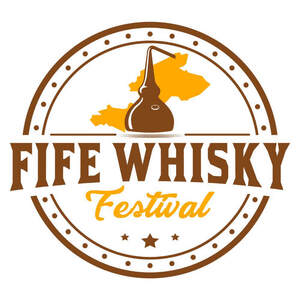
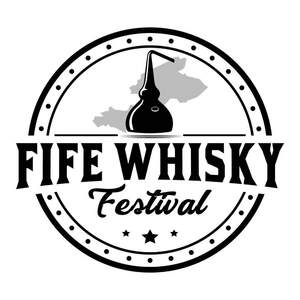

Trade Mark Journal No.2025/033 15 August 2025
UK00004239458 25 July 2025 (21,25,33,35,41)
Mark 1

Mark 2

- Class 21
- Household or kitchen utensils and containers; glassware; porcelain and earthenware; drinking glasses; whisky tasting glasses; souvenir glassware. .
- Class 25
- Clothing; T-shirts; sweatshirts; hoodies; jackets; hats; caps; beanies; scarves; socks; footwear; headwear; aprons.
- Class 33
- Alcoholic beverages (except beers); whisky; blended whisky; single malt whisky; blended malt whisky; single grain whisky; spirits; insofar as whisky and whisky based drinks are concerned, all complying with the specification of the (GI) Scotch whisky.
- Class 35
- Advertising; promotional services; event marketing services; organisation of whisky tasting events for commercial or advertising purposes; retail services connected with the sale of alcoholic beverages, clothing, and glassware; business administration and management of whisky festivals.
- Class 41
- Organisation of whisky festivals; organisation of whisky tasting events; all relating to the tasting of Scotch Whisky complying with the specifications of the GI Scotch Whisky; entertainment services; cultural activities; arranging and conducting of workshops and seminars related to whisky; educational services relating to whisky.
Fife Whisky Festival Ltd